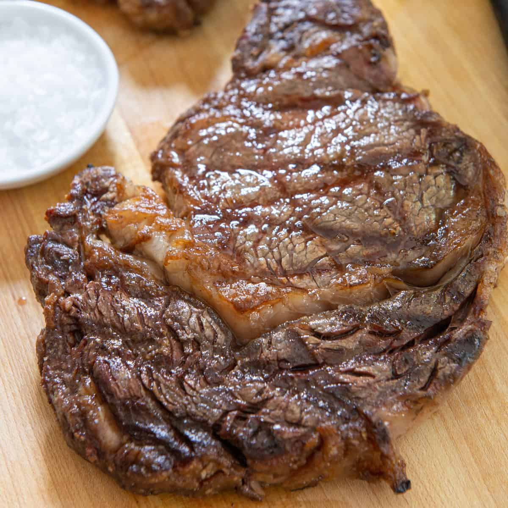

Ribeye Recipe

Easy Cast-Iron Ribeye
This is an easy indoor recipe for a ribeye steak using a cast-iron pan.
Prep Time: 10 minutes Cook Time: 10 Minutes
Ingredient
- Ribeye Steak
- Steak Seasoning
- Worshecshtheritiitiere Sauce
- Butter
Cooking Steps
- Preheat oven to 400 degrees
- Rub Worsheshtercshitestr sauce into the steak
- Generously season with your choice of steak seasoning
- Heat cast-iron pan on medium-high heat on stovetop
- When pan is hot put in 1/8 tbs of butter
- Sear steak for 1 min on each side in pan on stove top, basting with butter
- place castiron pan with seared ribeye into the overn for 8 minutes
- Remove pan from oven and place steak on resting tray and let reast 5 minutes
- Enjoy!
Return Home